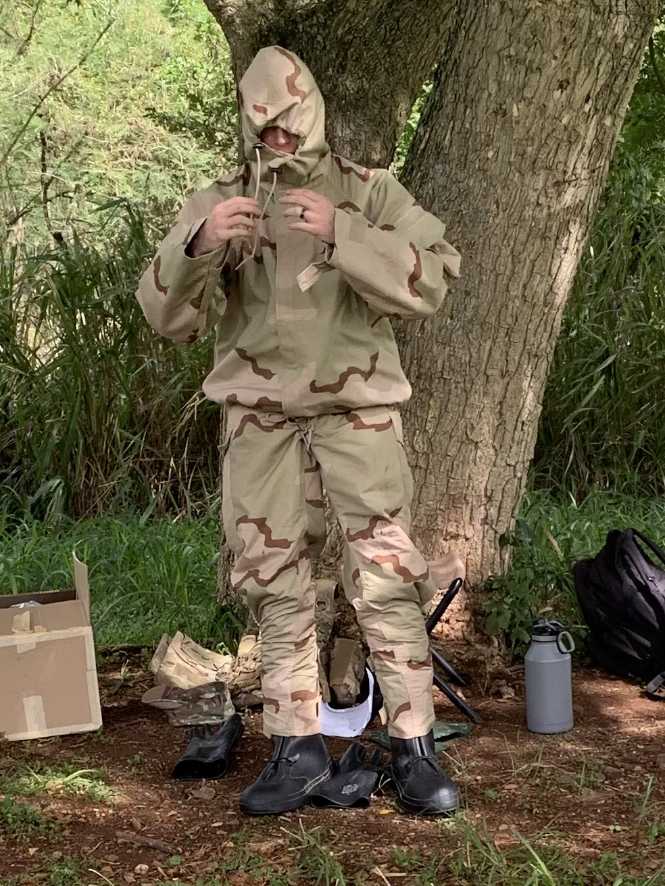
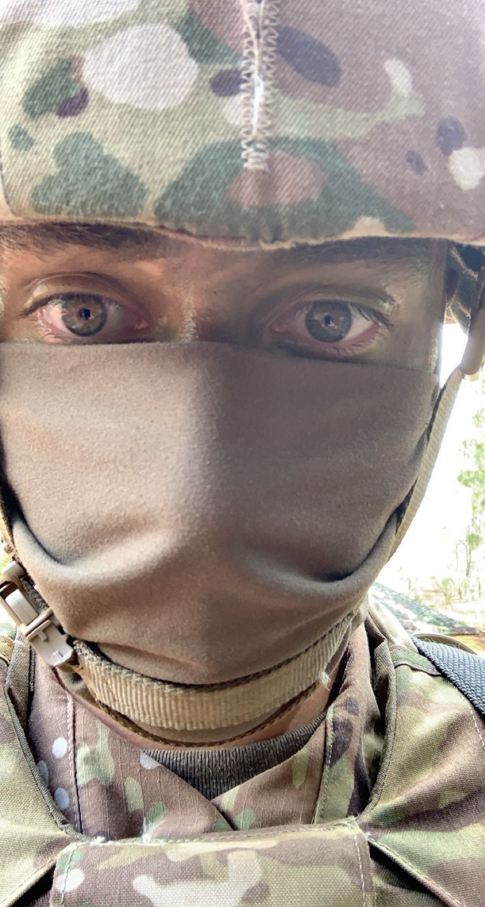
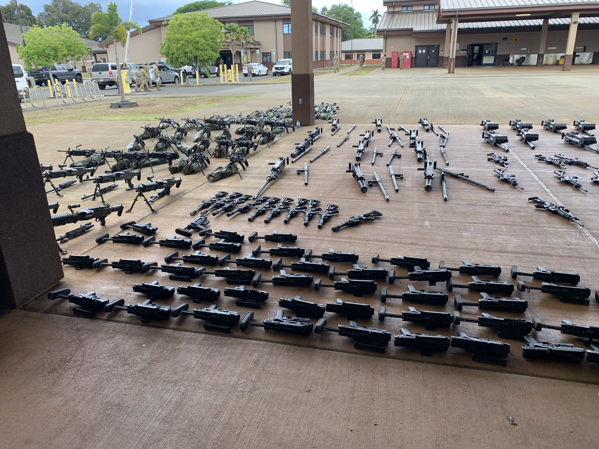

My time in Hawaii was fun; I was Stationed on Schofield Barracks on Oahu where i spent a few years before i was finally discharged due to Injury sustained in the service. Of the many photos i took i wanted to share these.
The first photo is of one of my Sergeants, Davis, who was demonstrating the CBRN (Chemical Biological Radiological and Chemical) suit and got "eaten" by it.
The next photo is of the forests of Oahu from one of our breaks up to a soft site (A training ground with no prefabricated structures).
A photo of me, covered in camo and uparmored with my heavy armor and SAW (Squad Automatic Weapon).
A layout of weapons, the bureaucracy of the armed forces comes with layouts, a systematic process of ensuring all weapons are accounted for and visually inspected. Includes undermountable grenade launchers, undermountable breaching shotguns, 7.62 caliber SAW's, 5.56 caliber SAW's, M2A1's, MK17 fully automatic grenade launchers ,and M4 carbines.
The standard personal weapons of the United States Army military police, for many years, was the 9mm Beretta M9. In 2019, the US Army announced that the SIG Sauer M17 and M18 would become the main handgun for MPs.[23] Also used are the 5.56 M4 carbine, the 40mm M320 Grenade Launcher Module, the M2 .50cal Machine Gun, the M249 Squad Automatic Weapon (SAW) or M240B, and the Mossberg 500 shotgun or M26 Modular Accessory Shotgun System. MP team leaders are typically assigned an M4 with an M320 attached, drivers are assigned an M249 and gunners are assigned an M4 in addition to any other crew-served weapons they are responsible for. Crew-served or vehicle-based weapons used by MP fireteams include the M2 Browning machine gun, M240B, and Mk 19 grenade launcher. MP teams often carry one or two AT4 anti-tank weapons, as well.
Source.
| Sgt Davis | The Forests of Oahu |
|---|---|
|  |  |
| Myself | A Layout |
|  |  |